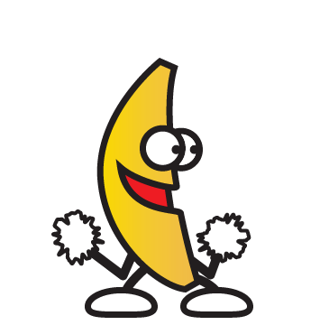

a)Uwagi na temat JS
-kiedy powstała? Język JavaScript został opracowany w 1995 roku.
-dlaczego jest to język skryptowy? JS to skryptowy oraz wieloparadygmatowy język programowania.
-gdzie jest wykonywany JS (klient lub serwer)? Kod JavaScript może być umieszczony w osobnych plikach, do których odwołują się pliki HTML, lub bezpośrednio w kodzie HTML w specjalnych znacznikach skryptów .
-dlaczego jest to bezpieczne narzędzie? gdy projekty w nim budowane są traktowane z odpowiednią dbałością i zastosowaniem najlepszych praktyk.
-czy jest to język obiektowy , jeśli tak to dlaczego? JavaScript to obiektowy język skryptowy. Aplikacje w języku Java działają w maszynie wirtualnej lub w przeglądarce, a kod JavaScript jest uruchamiany wyłącznie w przeglądarkach.
 ‹input type="button" name="przycisk" value="Nowa Strona" onclick="WinOpen(' ')"›komenda ta odpowiada za wyświetlenie przycisku o nazwie Nowa strona
window.open("obraz.html","okienko","toolbar=no,directories=no,menubar=no,height=280,width=160,top=200,left=200");komenda ta otwiera nową strone o nazwie obraz.html gdzie:
toolbar=no
oznacza wartość no : ukrywa standardowy pasek narzędzi
directories=no
oznacza wartość no : ukrywa przyciski katalogów
menubar=no
oznacza wartość no:ukrywa menu przeglądarki
height=280
oznacza wartość w pixelach: ustawia wysokość okna
width=160
oznacza wartość w pixelach: ustawia szerokość okna
top=200
oznacza wartość w pixelach : ustawia położenie okna względem góry ekranu
left=200
oznacza wartość w pixelach : ustawia położenie okna względem lewej strony ekranu
window.close()komenda odpowiada za zamknięcie strony